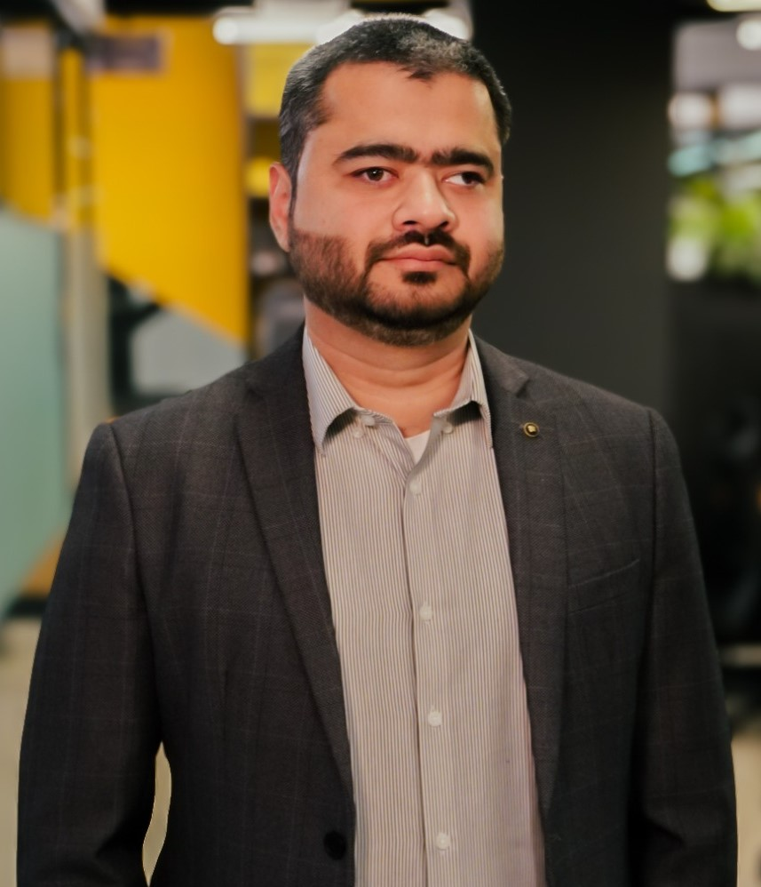
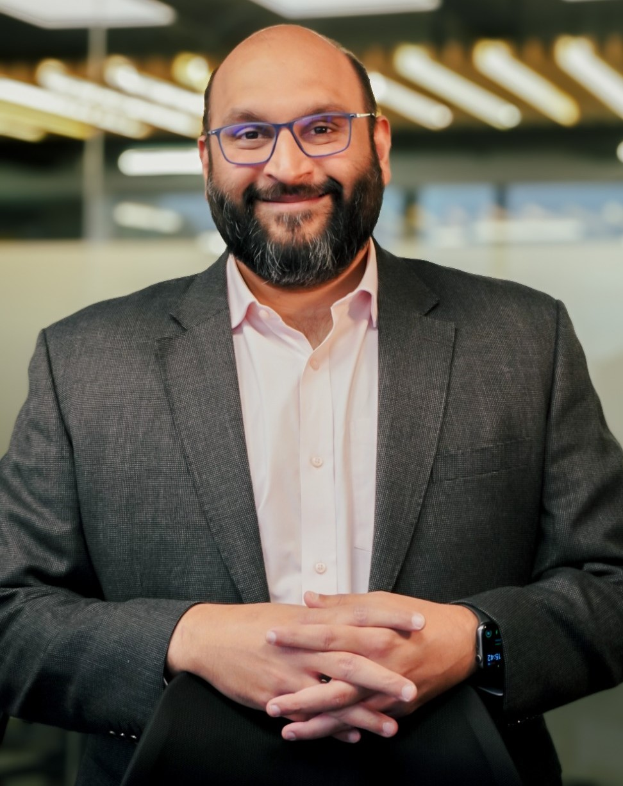
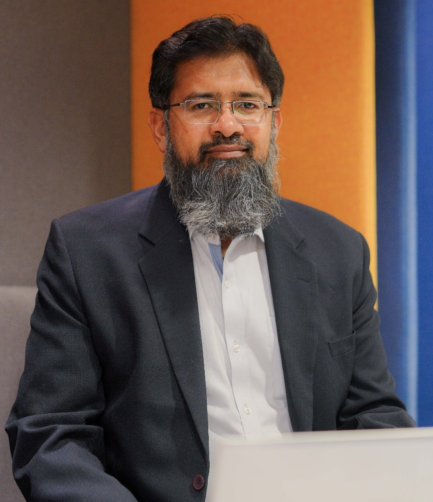
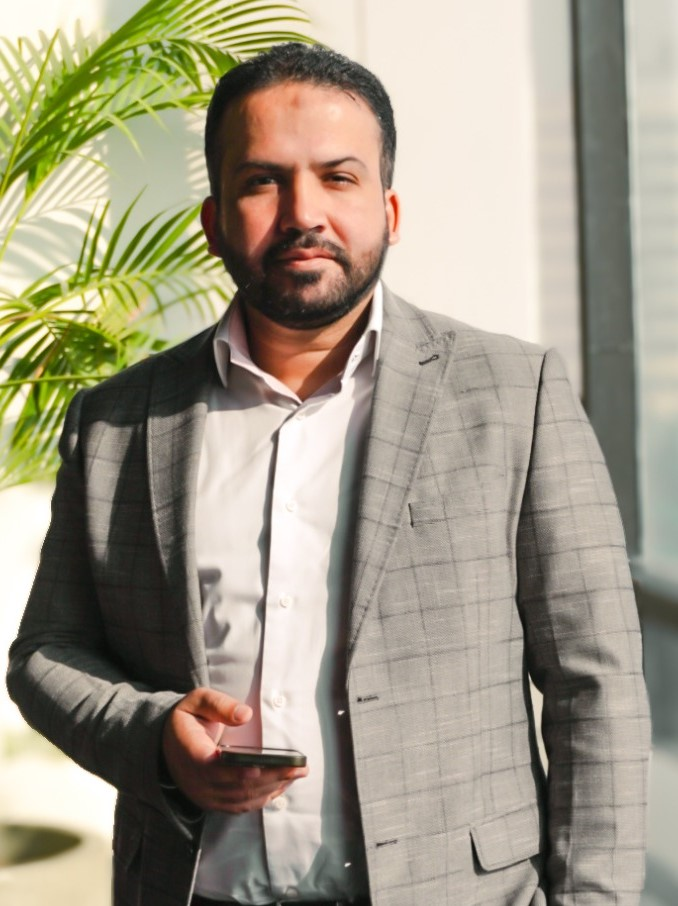

Our team comprises experienced professionals in audit, technical accounting, finance, valuations, due diligence, internal audit, taxation, and technology.
With a hybrid onshore–offshore delivery model and deep GCC expertise, we provide Big 4-quality work with personalized attention and faster turnaround.

Arsalan is an experienced partner with around 20 years of professional experience, most of it gained through senior roles at Big 4 firms in Saudi Arabia and Pakistan.
He has served as a trusted advisor to financial institutions, family-owned businesses, and publicly listed companies, leading a wide range of audit and business advisory engagements.
Known for his balanced and pragmatic approach to risk management, Arsalan has a strong ability to understand client perspectives and deliver solutions aligned with regulatory requirements and market realities.
Arsalan’s primary focus has been on serving financial institutions including public listed banks, mutual funds, investment companies and financing companies but he has also served clients operating in telecommunication, petrochemical, services, trading and manufacturing sectors.
Arsalan’s experience spans from audit and assurance services to business advisory, consulting and risk assurance.
Arsalan has also performed full scope onsite banking inspections on behalf of the Saudi Arabian Monetary Authority and was involved in the internal audit and identification of internal control weaknesses of MCB Bank Limited, Pakistan.
In addition, he has acted in the capacity of reporting accountant in connection with the issue of Global Depository Receipts by MCB Bank Limited, Pakistan.
He has also represented a Big 4 firm in the panel of Big 4 audit firms responsible for addressing technical IFRS issues including review and coordination in preparation of Illustrative Financial Statements of Saudi Banks.

Farouk is a seasoned partner with over 23 years of professional experience, most of it gained through senior roles with Big 4 professional services firms across Saudi Arabia, the UAE, and Pakistan.
He has worked extensively with a diverse portfolio of clients, including multinational corporations, family-owned businesses, high-growth companies, and government-related entities.
Farouk brings deep expertise in building, scaling, and managing accounting and advisory practices, supported by strong leadership, commercial judgment, and technical rigor.
He is known for his practical and solution-oriented approach, helping clients navigate complex financial, regulatory, and transaction-related matters with clarity and confidence.
His industry experience spans technology, real estate, entertainment, hospitality, retail, fast-moving consumer goods (FMCG), and sovereign wealth fund–backed entities.
As Co-Founder and Partner of HarAik, Farouk has supported numerous corporates and professional services firms across the GCC and other international markets.

With 22+ years in audit, financial reporting, and advisory, Salman kicked off his career in Big 4 firms and worked in Pakistan and the Middle East.
He later led Financial Reporting at a top multinational in Saudi Arabia.
Salman is known for building strong relationships with stakeholders, mentoring emerging talent, and developing high-performing teams.
He brings practical, solution-oriented insights to complex organizational challenges.

Abubakar is a senior assurance and advisory professional with over 15 years of regional and international experience, advising clients across Saudi Arabia and Pakistan.
He has supported listed entities, large family-owned groups, regulated financial institutions, and professional services firms on statutory audits, IFRS conversion, regulatory compliance, and audit quality matters.
He brings deep technical expertise in IFRS interpretation, first-time adoption, and complex accounting conversions.
Abubakar has played a lead role in the implementation and enhancement of audit quality management systems including ISQM 1 and ISQM 2.
He is recognized for his regulator-facing mindset, strong governance orientation, and ability to deliver practical, defensible solutions balancing technical compliance with commercial realities.